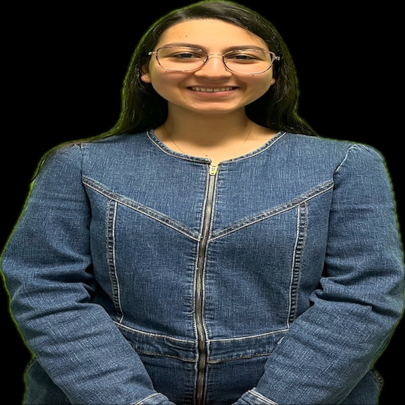
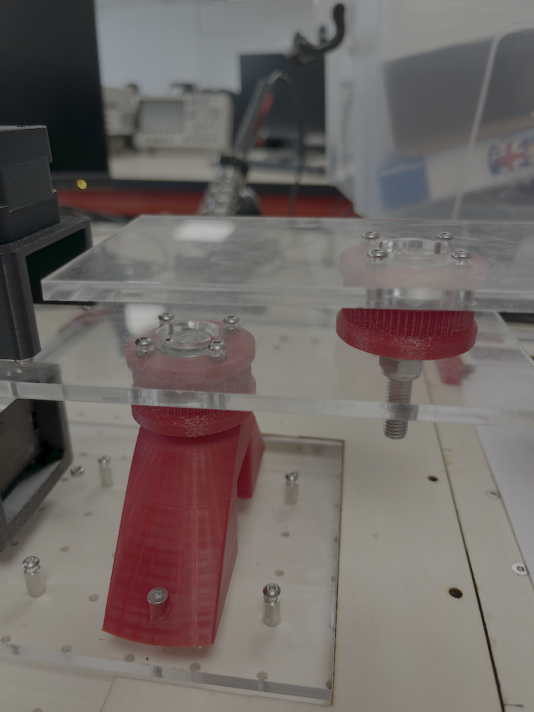
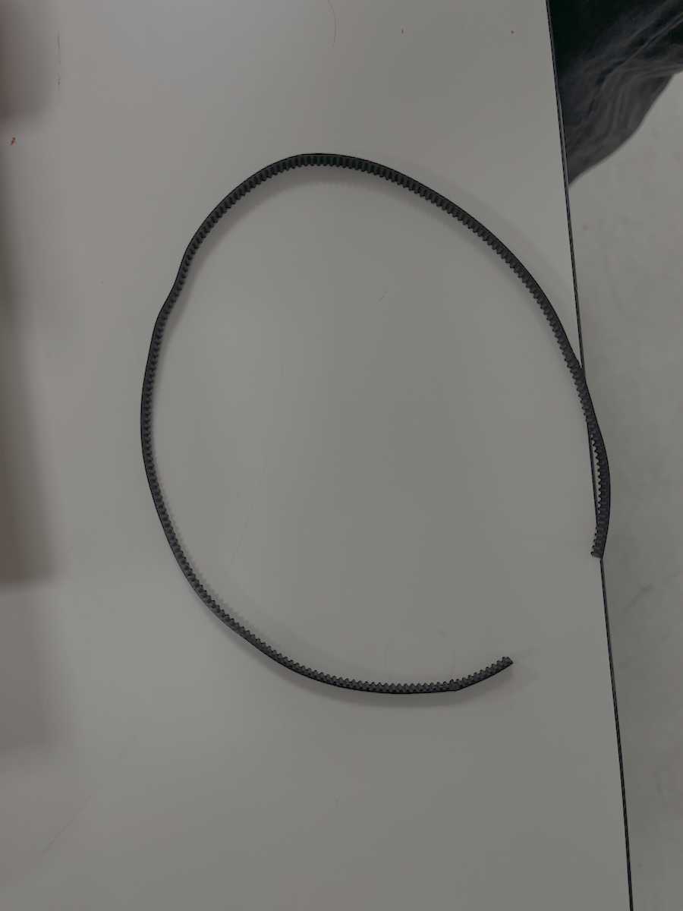
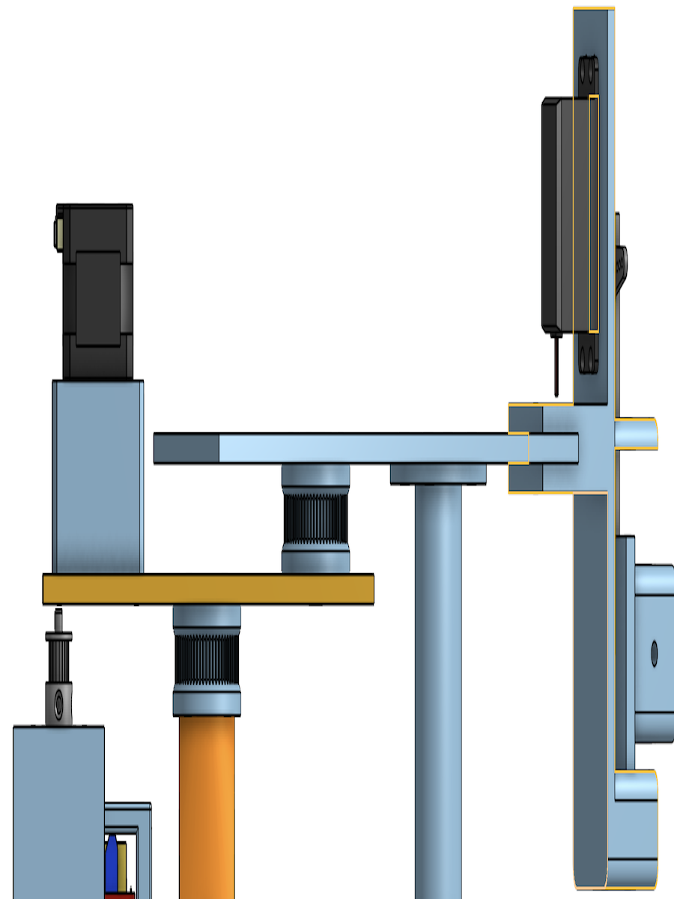
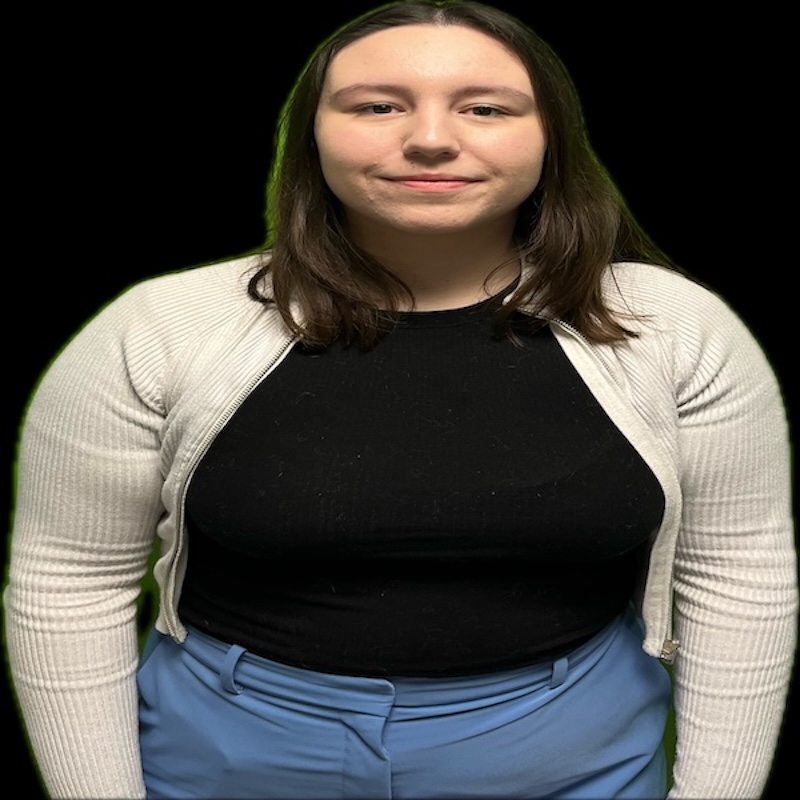
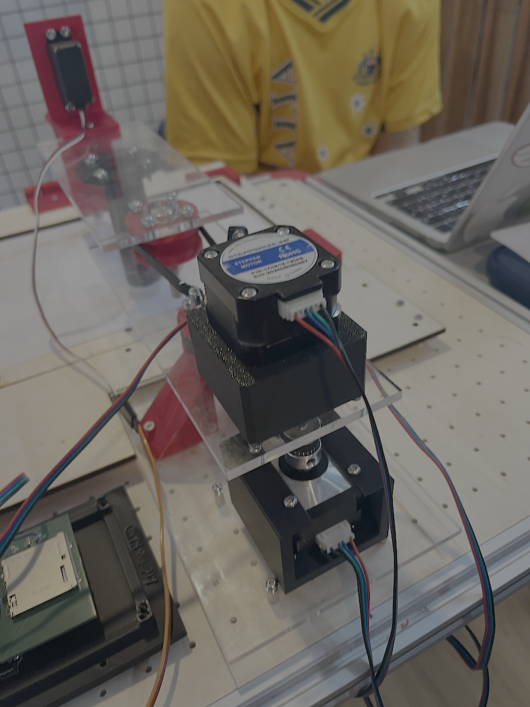
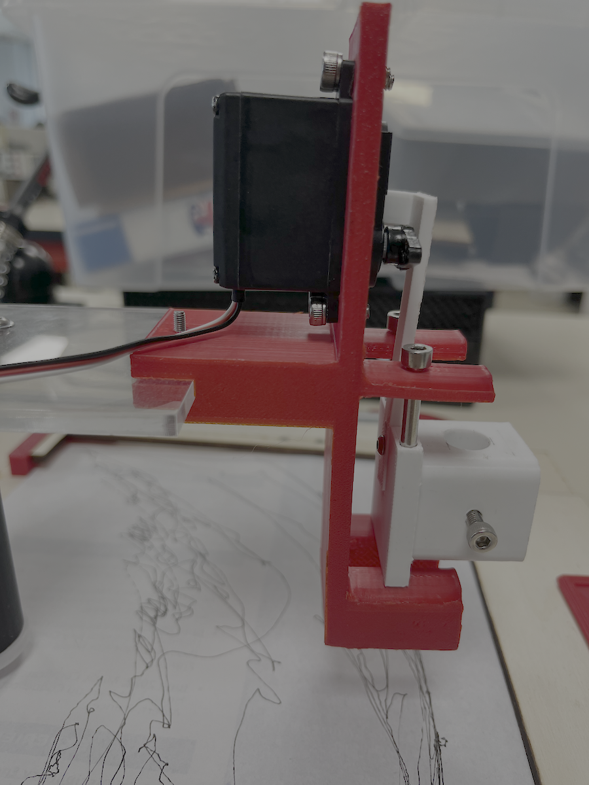
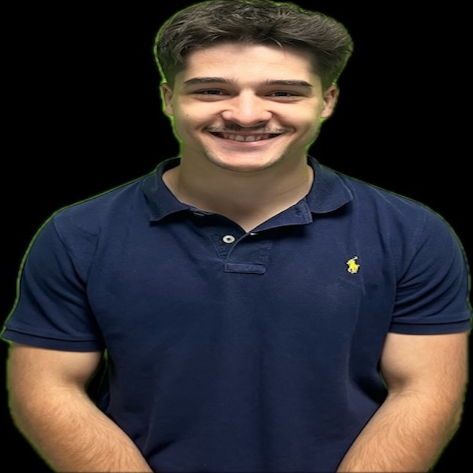
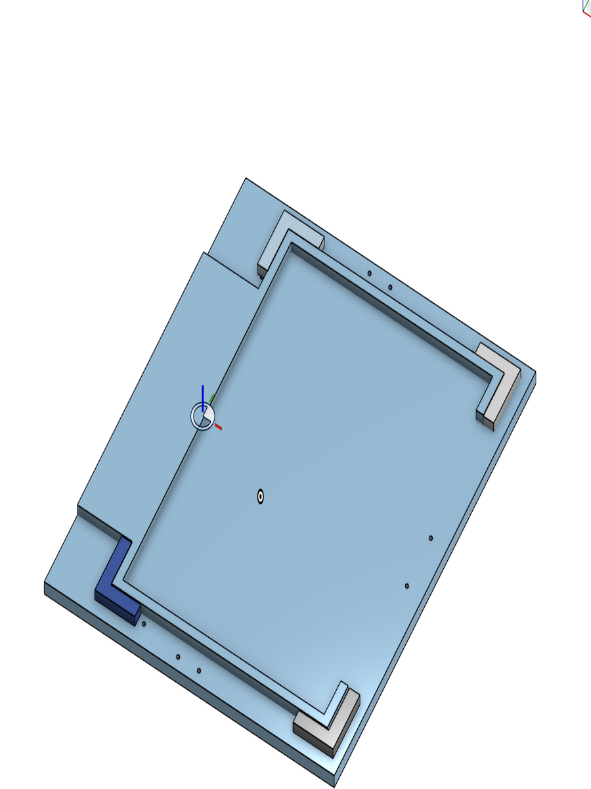
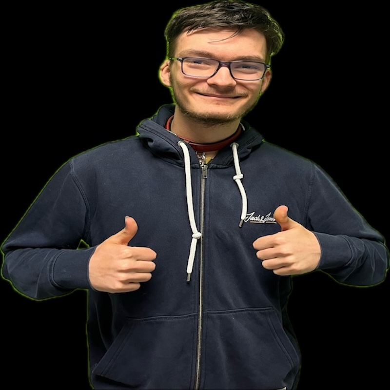

N
'" />
Cinq étudiants ingénieurs, cinq rôles complémentaires autour du DrawBot A4.
Nadhem a porté la structuration du site, la documentation technique détaillée, l'intégration des contenus, images et vidéos, ainsi que le suivi d'ensemble du projet. Son rôle ne s'est pas limité à la partie web : il a également participé à l'assemblage général de la machine, à l'organisation des livrables et à la cohérence du dossier présenté au jury.

YYasmine a piloté l'architecture mécanique du DrawBot A4 et l'ensemble de la transmission : bras articulés, poulies, courroies GT2, roulements et points d'articulation, en veillant à la stabilité et à la fluidité de rotation.
Son travail a notamment porté sur la tension des courroies, l'alignement mécanique des axes, la rigidité globale du bras et les réglages successifs pour obtenir un mouvement répétable et précis.



Transmission par poulies et courroies GT2, roulements, bras articulés et réglages mécaniques fins.

SSamantha a conçu plusieurs pièces mécaniques clés sous Onshape : deux versions du support moteur, le porte-stylo intégrant guidage, levier, vis lisses et clip de maintien, ainsi que diverses pièces d'interface. Elle a piloté l'impression 3D de ces éléments et participé à l'assemblage final de la machine.


Captures Onshape, rendus mécaniques et prototypes imprimés en 3D issus de son travail.

MMaxence a conçu et réalisé tout le système de maintien de la feuille A4 : support feuille découpé au laser, clapet de fixation, charnières et pièces d'interface imprimées en 3D. Une feuille parfaitement plane et immobile conditionne directement la précision du tracé final.
Il a également modélisé et réalisé le support de la carte électronique, le support du bouton d'arrêt d'urgence, ainsi que les prototypes de maintien et le mécanisme de croix utilisés pour la stabilisation et l'alignement de la machine.

Sous-ensemble support feuille : clapet, charnières et maintien stable pour la feuille A4.

D
Damien a construit toute la chaîne logicielle et firmware du DrawBot A4.
Il a installé et configuré l'environnement (VSCode + PlatformIO), flashé l'ESP32
avec FluidNC, écrit le fichier config.yaml décrivant
la machine, puis mis au point la communication série.
Pipeline : image → SVG (imagetracer.js) → GCODE → communication série → FluidNC → moteurs. Il a également calibré les pas/mm, vitesses et accélérations pour que le tracé corresponde à la géométrie réelle du bras.